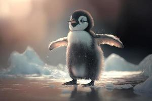

Qué son los Pingüinos?
Llamamos Pingüinos a las distintas especies de aves pertenecientes a la familia Spheniscidae, únicas aves del planeta que en vez de volar, utilizan sus alas para bucear en el mar y capturar su alimento. Son especies casi exclusivas del hemisferio sur del planeta.
Los Pingüinos son animales sociales que habitan en numerosas colonias, y cuyo mayor peligro vital lo representa la mano humana. De hecho, el cambio climatico y el derretimiento de los polos es uno de los principales riesgos que la especie debe enfrentar, junto con la contaminacion maritima por parte de quimicos y plásticos. Varias de las especies actuales de Pingüinos se encuentran en algun margen de riesgo de extincion.

PingüinosPingüinos
Pingüinos
Pingüinos
PingüinosPingüinos